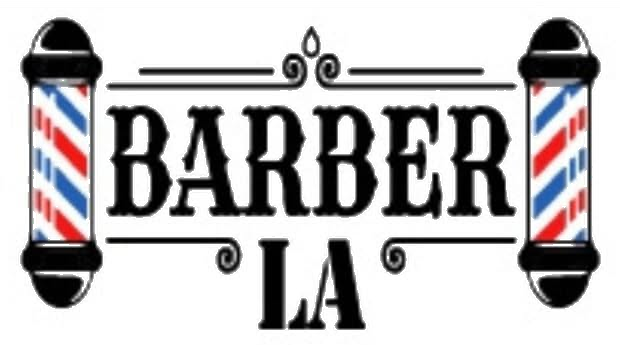
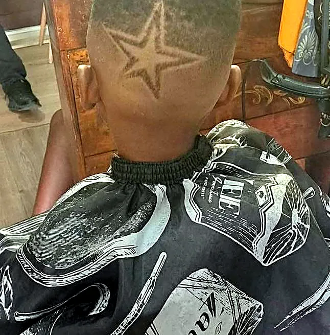
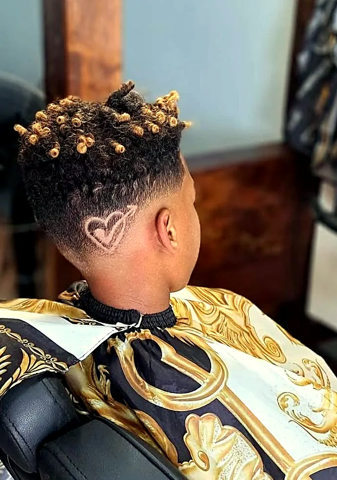
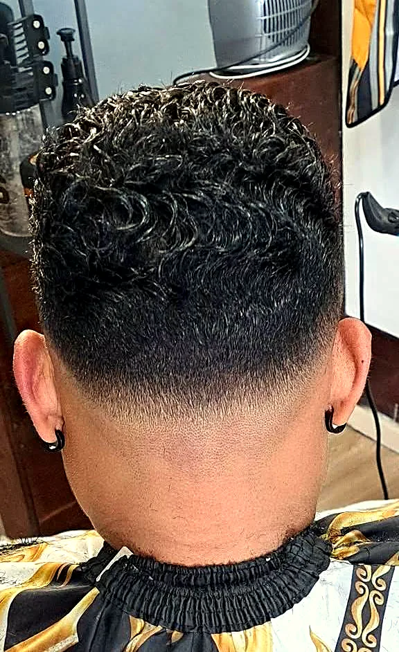
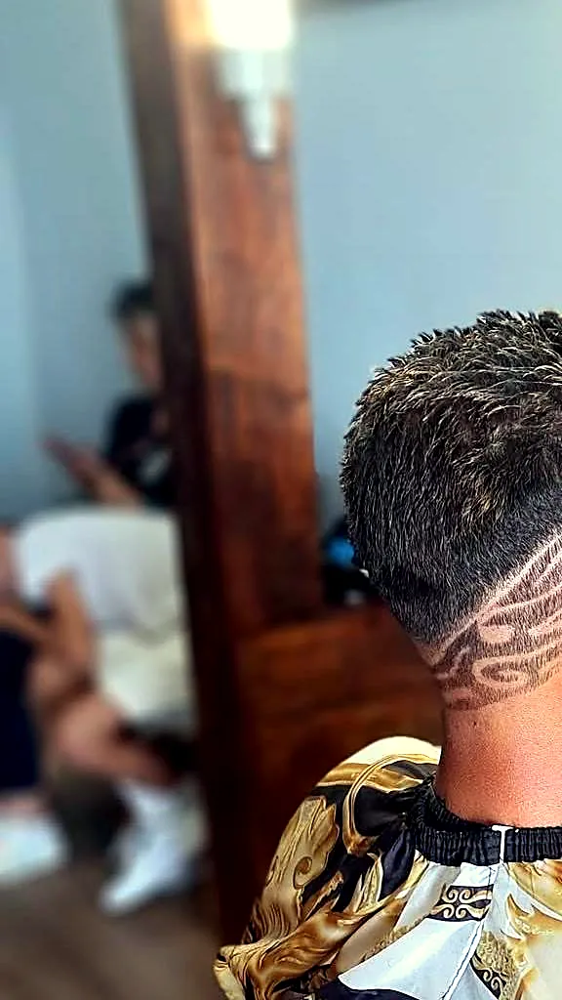
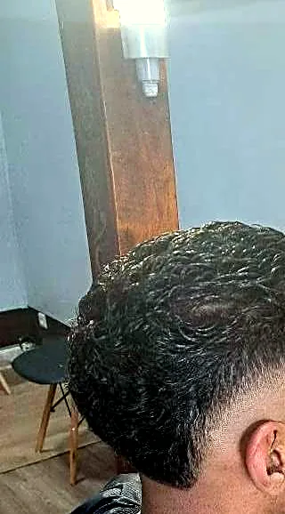

Dernière publicationBarber LA lé là !
Barber La26 octobre 2026 · Les Trois-Bassins

Coupe, dégradé, taille de barbe et soins cheveux, dans une ambiance conviviale. Barber LA lé là !
✅ Sans rendez-vous · passe quand tu veuxDepuis mai 2025, Barber LA accueille petits et grands au 6 rue Victor Hugo, côté PMU. On y entre comme on est, on en ressort le look soigné.
✂️ « Salon barber pour tous : coupe, dégradé, taille de barbe et soins cheveux. »
💈 « Ambiance conviviale, résultat précis, look soigné. Hésite pas BARBER LA lé là ! »
— la présentation de Barber LA sur Facebook
Modernes & classiques, pour tous.
Des transitions nettes, du plus court au plus long, finies au contour.
Taille de barbe & rasage précis.
Motifs tracés à la tondeuse : une étoile, un cœur… à toi de choisir.
Au salon, pour des cheveux au top.
« Style, propreté, perfection. »
Quelques réalisations publiées par Barber LA sur sa page.





← fais glisser pour voir les coupes →
Sans rendez-vous ni réservation, sauf le mardi matin.
Horaires affichés par le salon ; ils peuvent varier, un coup d'œil à la page Facebook avant de venir.
Barber LA
6 rue Victor Hugo, côté PMU
97426 Les Trois-Bassins